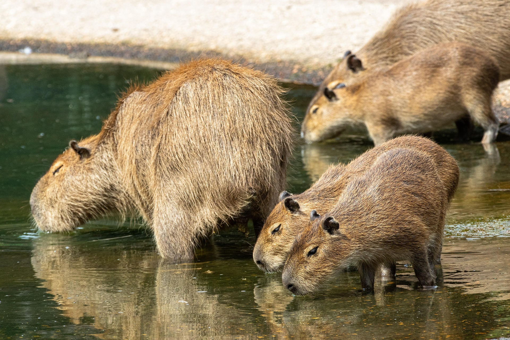

Projeto Capivara Livre 2025
Com o aumento de atropelamentos e conflitos em áreas urbanas, lançamos o Capivara Livre 2025, um programa de mapeamento de rotas seguras, instalação de passagens de fauna e campanhas educativas em escolas e comunidades.
- ✅ 12 passagens de fauna instaladas em rodovias paulistas
- ✅ 3 mil alunos impactados por oficinas lúdicas
- ✅ 87 capivaras resgatadas e reintroduzidas em áreas seguras

Voluntariado
Participe dos nossos projetos de educação ambiental e resgate de capivaras em áreas urbanas.
Como ser voluntário
Ser Voluntário
Como Doar
Ajude com doações financeiras ou materiais. Toda contribuição é essencial para nossa missão.
Como Doar